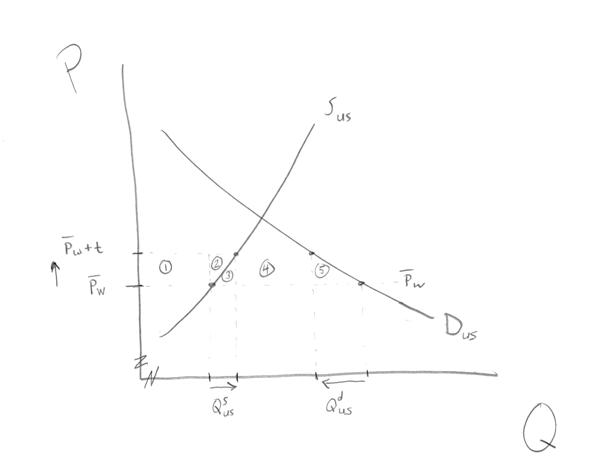

A Tariff (S&D, static welfare analysis)

losses of CS: 1+2+3+4+5 (1,2,3,4 from higher price paid; 5 from reduced consumption)
govt tariff rev: 4
gains
of PS : 1+2
(1 from higher price; 2 from increased production)
Net loss : 3 + 5 (5
from reduced consumption; 3 from excessive-cost of domestic
production); these are often called "deadweight losses," in contrast to
areas 1,2,4 which are transfers.
Standard extension: with
a large country the same tariff will raise the price by less, because
the world price will decline. That reduces the losses from the
tariff, and could even generate a gain (which is a loss for the rest of
the world).